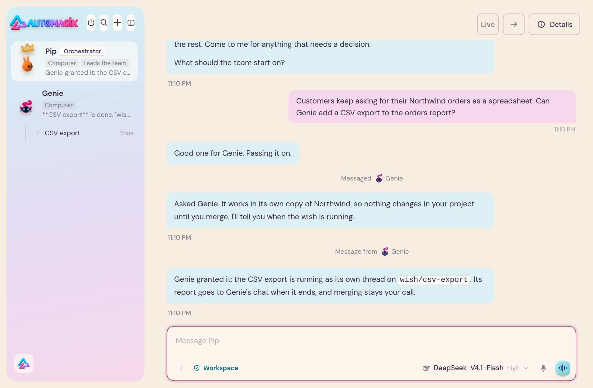
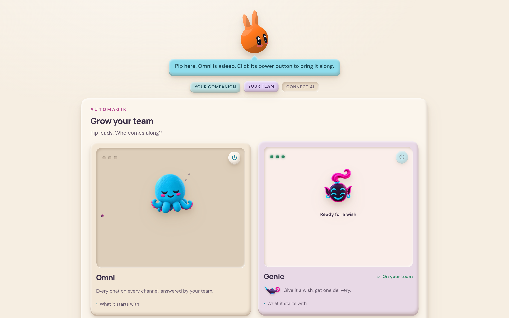
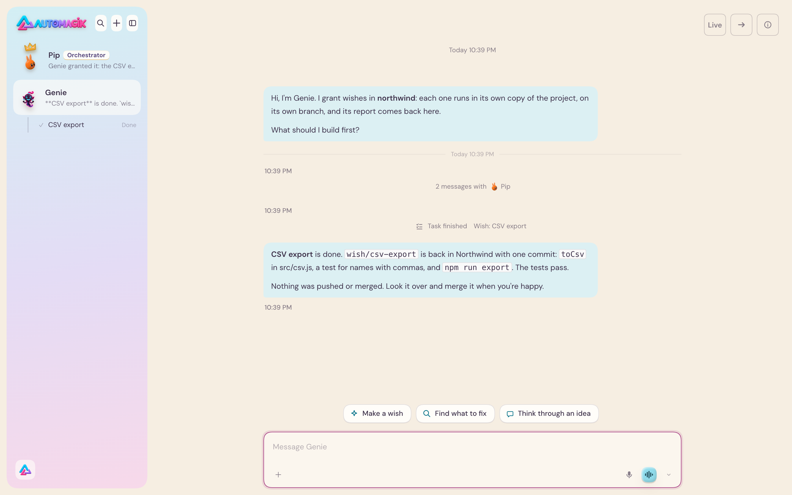
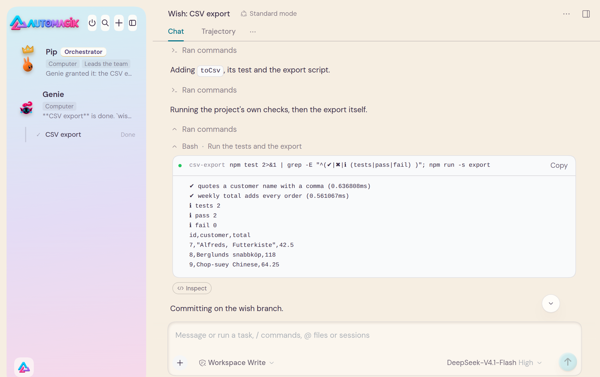
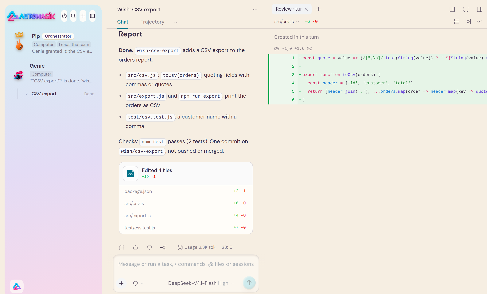

AUTOMAGIK · OPEN SOURCE
Ask once.
Your team does the work.
A desktop team of AI Bots. Your Main Bot takes the request and hands it to the Bot that does that kind of work. Genie turns it into a branch, runs your project’s checks and reports back.

Every screen on this page is the real app, rendered by a capture script from the released plugins. The project is a fictional one, after Northwind, the classic sample company. The Bots’ replies are scripted for the capture, so the timings on screen (a turn completed in 1s) are not a real model’s. Every command, commit and file change in them was real. How these screens were made
01 · YOUR TEAM
You pick who joins.
The first time it runs, you make your companion. It becomes your Main Bot and leads the team. Then you choose who comes along. Each teammate has its own plugin and switches on here.
- Pip, the companion you just made, leads.
- Genie is on the team: its plugin is installed.
- Omni is asleep, with its power button off. Turning it on needs an Omni to connect to, and this capture has none.

02 · GENIE: WISH → BRANCH → REPORT
A wish becomes a branch.
Merging stays your call.
Genie works in a project folder. Each wish runs as its own thread, in its own copy of the project, on a new wish/ branch. When it ends, the branch comes back to your project. Nothing is pushed or merged.
-

1Granted, done, reported. The wish ran as its own thread, which the sidebar lists under Genie. Genie reports what changed and on which branch, and leaves the merge to you. -

2It runs your checks. In its own copy of the project, the thread runs the project’s own npm test(2 pass, 0 fail) and the new export, then commits on the branch. -

3You review the change. The thread ends with a report and the files it changed. Open any of them to read the diff before you decide.
03 · BUILT TO BE EXTENDED
Everything is a plugin.
Automagik runs on DeepSeek Harness (DSH), and so does every part of it. The screens above come from three plugins on DSH 0.2.1-rc.5:
@automagik/bots-dsh3.52.1The Bot team: Pip, chats, messages between Bots, threads.@automagik/welcome-dsh3.52.1The welcome: your companion, your team, your AI.@automagik/genie-dsh0.1.4Genie and its wishes.
Already use DSH? Add Automagik’s market index to its plugin market (Settings → Plugins → Plugin market, then Market → Indexes), and pick what to install. DSH asks before it installs anything.
https://raw.githubusercontent.com/automagik-dev/dsh-marketplace/main/index.jsonTODO: a one-click install link is not verified yet, so this button is off. Use the index above.
Built on DeepSeek Harness, and this page takes its cue from the DeepSeek Harness page. Automagik is an independent project. This is not a partnership, and DeepSeek does not endorse it.
04 · GET STARTED
Two commands.
For developers. The Genie CLI installs on Linux (x64 or arm64) and on a Mac with Apple silicon. genie desktop needs Linux x64 or a Mac with Apple silicon: there is no Linux arm64 desktop build yet. Intel Macs and Windows are not supported; on Windows, use WSL.
curl -fsSL https://raw.githubusercontent.com/automagik-dev/genie/main/install.sh | bashgenie desktopDownloads the Automagik desktop build for your machine from GitHub releases, checks it against the release’s SHA256SUMS and opens it with Genie preloaded. On a Mac it opens the disk image, and you drag the app into Applications.
You bring your own AI account or API key. Your provider’s fees and terms apply.